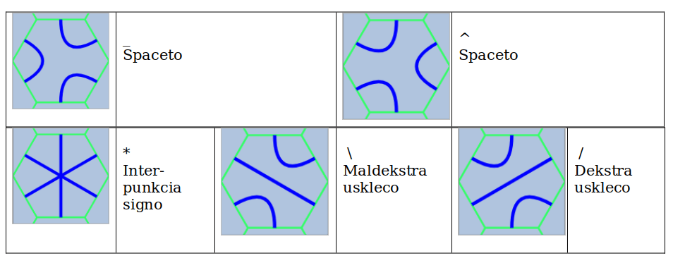
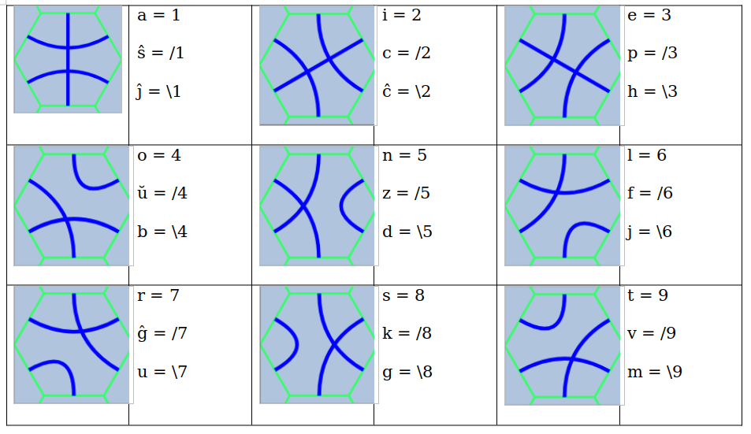
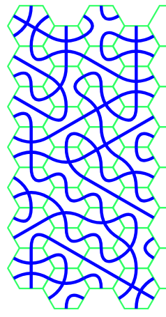
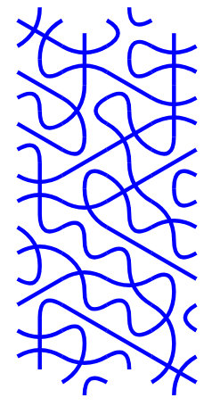
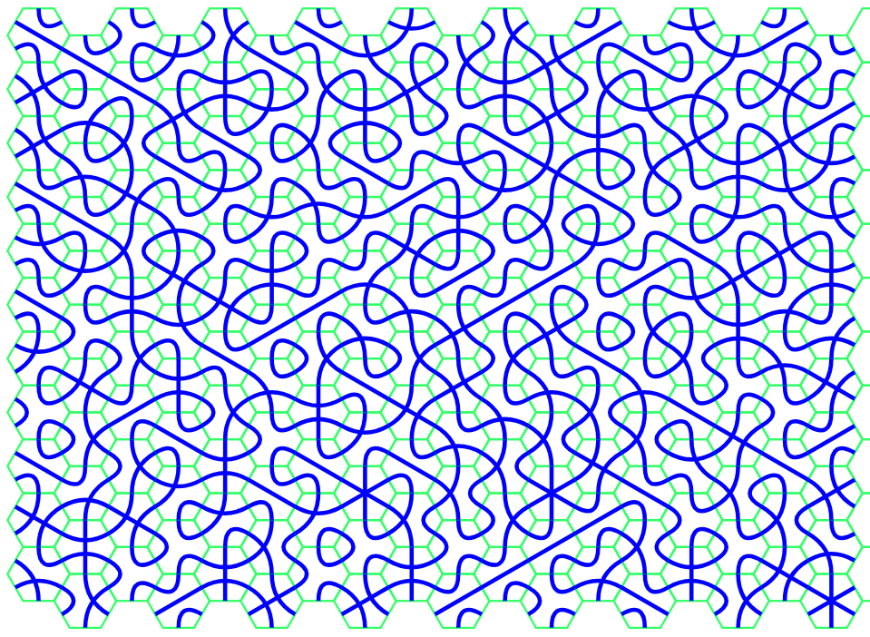
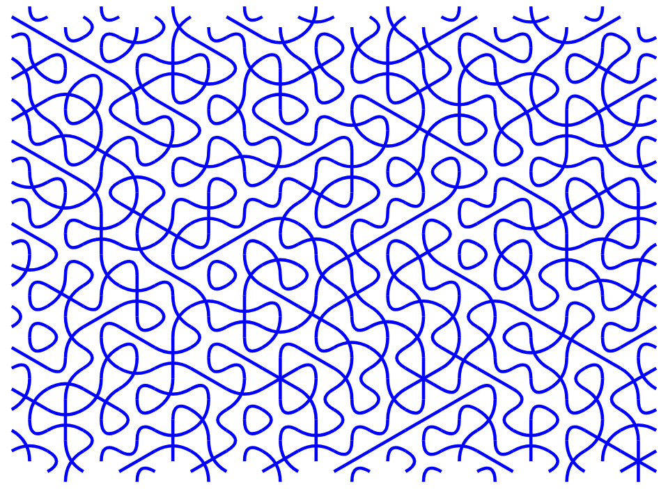

Seslatera kahelaro
estas ŝablono de regulaj heksagonoj, kiuj kuniĝas senjunte, ofte videbla en naturo kiel mielĉelaj
strukturoj kaj uzata en plankaj kahelaroj kaj grafikaj dezajnoj.
Truchet-kahelaro
uzas kvadratajn kahelojn kun unikaj dezajnoj, ofte kurboj aŭ linioj, kiuj konektiĝas kiam metitaj apud
unu la alia. Nomita laŭ Sébastien Truchet [Sebastjen Trüŝe], ĉi tiu metodo permesas
kompleksajn kaj allogajn mozaikojn per rotaciado kaj aranĝado de kaheloj.
Seslatera Truchet-kahelaro kunigas la Seslateran kaj Truchet-kahelarojn, prezentante
seslaterojn ornamitajn per tri Bezier-kurboj konektantaj la mezpunktojn de iliaj randoj.
Enkodado
Pli detala priskribo de la metodo troveblas en la angla versio.
Tiu ĉi enkodado havas 15 diversajn kahelojn. Du el ili servas kiel signo de
spaceto _ kaj ^. Unu estas markilo de interpunkciaj signoj *.
Du pluaj estas markiloj de "uskleco". La ceteraj kaheloj servas por marki ciferojn kaj literojn.

Esperanta latina alfabeto havas nur majusklojn kaj minusklojn. Tiu ĉi enkodado uzas tri "usklojn": dekstra /, maldekstra \ kaj nenia. Ĉiu litero do estas enkodita per unu kahelo (la plej oftaj) aŭ per du kaheloj: signo de uskleco kaj la litero mem.

Ekzemploj
eĥoŝanĝoj ĉiuĵaŭde
3\\14/1 15/74\6 _\22\7\ 11/4\53
La teksto estas aranĝita vertikale de supre malsupren, kaj kolumnoj sekvas de maldekstre dekstren.
| 3 | 1 | _ | 1 |
| \ | 5 | \ | 1 |
| \ | / | 2 | / |
| 1 | 7 | 2 | 4 |
| 4 | 4 | \ | \ |
| / | \ | 7 | 5 |
| 1 | 6 | \ | 3 |
Kiel tio aspektas per la Seslatera enkodado de Truchet, kun videbla kaj nevidebla reto:


Pli granda ekzemplo, la unua artikolo de "Universala Deklaracio de Homaj Rajtoj":
Ĉiuj homoj estas denaske liberaj kaj egalaj laŭ digno
kaj rajtoj. Ili posedas racion kaj konsciencon, kaj devus
konduti unu al alia en spirito de frateco.
\22\7\6_\34\94\6_38918_\53518/83_62\4371\6_/81\6_3\8161\6_61/4_\52\854Kiel tio aspektas, kun kaj sen reto:
_/81\6_71\694\6*_262_/3483\518_71/2245_/81\6_/8458/2235/245*/_/81\6_\53/9\78
_/845\5\792_\75\7_16_1621_35_8/327294_\53_/67193/24*

